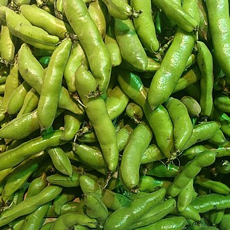

そら豆の生産量 都道府県ランキング
全17都道府県の順位と収穫量
そら豆の収穫量が全国で最も多いのは鹿児島県で、2,460 tです。全国（1万1,500 t）の21%を占めます。

| 順位 | 都道府県 | 収穫量 | 全国に占める割合 |
|---|---|---|---|
| 1位 | 鹿児島県 | 2,460 t | 21% |
| 2位 | 千葉県 | 2,210 t | 19% |
| 3位 | 茨城県 | 1,120 t | 9.7% |
| 4位 | 愛媛県 | 483 t | 4.2% |
| 5位 | 宮城県 | 451 t | 3.9% |
| 6位 | 新潟県 | 440 t | 3.8% |
| 7位 | 福岡県 | 329 t | 2.9% |
| 8位 | 熊本県 | 327 t | 2.8% |
| 9位 | 香川県 | 301 t | 2.6% |
| 10位 | 長崎県 | 295 t | 2.6% |
| 11位 | 鳥取県 | 286 t | 2.5% |
| 12位 | 兵庫県 | 255 t | 2.2% |
| 13位 | 徳島県 | 249 t | 2.2% |
| 14位 | 秋田県 | 206 t | 1.8% |
| 15位 | 静岡県 | 199 t | 1.7% |
| 16位 | 大阪府 | 152 t | 1.3% |
| 17位 | 青森県 | 101 t | 0.9% |
そら豆の生産量の推移（令和2年産〜令和6年産）
全国の収穫量は、令和2年産の1万5,300 tから令和6年産の1万1,500 tへ、25%減りました。1位は入れ替わっています（令和2年産は鹿児島県、令和5年産は千葉県、令和6年産は鹿児島県）。
| 年 | 全国 | 1位 | 2位 | 3位 |
|---|---|---|---|---|
| 令和6年産 | 1万1,500 t | 鹿児島県2,460 t | 千葉県2,210 t | 茨城県1,120 t |
| 令和5年産 | 1万1,400 t | 千葉県2,410 t | 鹿児島県1,750 t | 茨城県1,250 t |
| 令和4年産 | 1万3,200 t | 鹿児島県3,230 t | 千葉県2,210 t | 茨城県1,230 t |
| 令和3年産 | 1万3,900 t | 鹿児島県3,300 t | 千葉県2,380 t | 茨城県1,270 t |
| 令和2年産 | 1万5,300 t | 鹿児島県3,530 t | 千葉県2,540 t | 茨城県1,350 t |
この数字について
- 分類：マメ科
- 全国の収穫量：1万1,500 t
- この数字が表すもの：収穫量（収穫された重量）
- 調査：作物統計調査 作況調査（野菜） 令和6年産
- 17県分を調査（調査していない県は順位に入りません）
そら豆の生産量について、よくある質問
- そら豆の生産量が日本一の都道府県はどこですか？
- 鹿児島県です。作物統計調査 作況調査（野菜）（令和6年産）で2,460 tでした。
- そら豆の生産量ランキング2位・3位はどこですか？
- 2位は千葉県（2,210 t）、3位は茨城県（1,120 t）です。
- そら豆の生産量ランキング4位・5位はどこですか？
- 4位は愛媛県（483 t）、5位は宮城県（451 t）です。そら豆の全17県の順位は上の表のとおりです。
- そら豆の全国の生産量はどれくらいですか？
- 1万1,500 t（令和6年産）です。